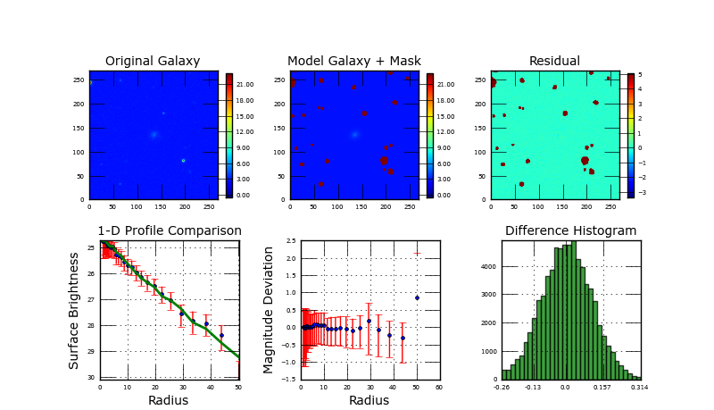

| Goodness is poor! |
| One of the parameters |
| hits limit! |
| Image | 00000023_r_stamp.fits NED | RA | 9999 | ||||
|---|---|---|---|---|---|---|---|
| Init. par. file | G_r_00000023_r_stamp.in | Dec | 9999 | ||||
| Restart file | galfit.01 | z | 0.113898 | ||||
|
Separation between psf and image |
9999.0 arc sec | |||||
|  | |
||||||
|
| Component | Center (x) | Center (y) | Magnitude | Scale Radius (pixels) | Scale Radius (kpc) | n | Axis Ratio | Position Angle | Boxy/Disky |
|---|---|---|---|---|---|---|---|---|---|
| sersic bulge | 134.87 | 135.05 | 19.0641 | 7.0782 | 5.728 | 0.9473 | 0.8296 | 55.1553 | 0 |
| 0.05 | 0.04 | 0.0132 | 0.1379 | 0.112 | 0.031 | 0.0119 | 3.2243 | 0 | |
| Concentration | Asymmetry | Clumpness | Gini Coefficient | M20 | B/D | B/T | MagInRe | ||
| 2.286 | 0.222 | 0.639 | 0.440 | -1.66 | -999 | 1.0 | 22.66 |